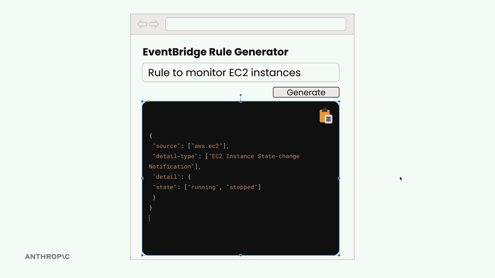
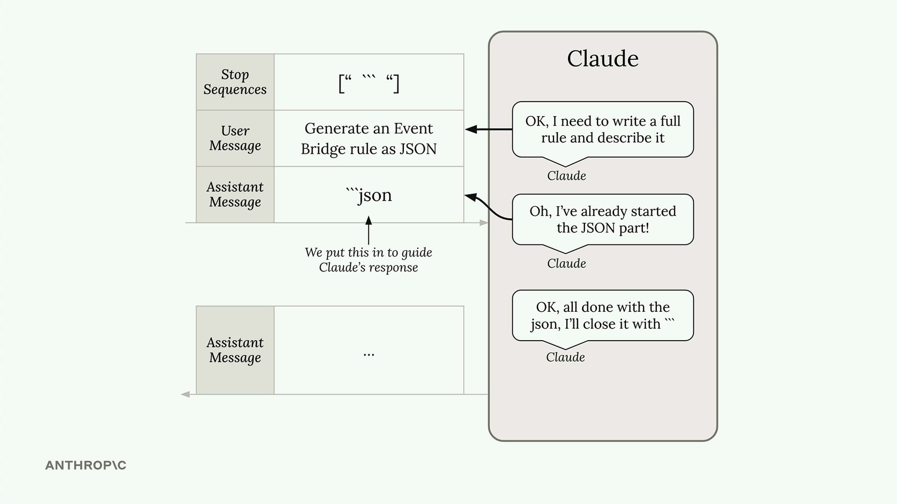

Структурированные данные
Чему научитесь
Видео 5:59 и текст урока
К концу урока вы сможете:
- объяснить, откуда вокруг JSON берутся пояснения и markdown;
- убрать их с помощью prefill сообщения assistant и stop sequence;
- подготовить и разобрать полученный JSON.
Видео и текст урока.
Смотреть урок на Skilljar Structured data · 5:59Когда нужно, чтобы Claude сгенерировал структурированные данные — JSON, код на Python или маркированный список, — часто возникает одна проблема: Claude хочет быть полезным и добавляет вокруг содержимого пояснения. Обычно это хорошо, но иногда нужны только сами данные и ничего больше.
Представьте веб-приложение, которое генерирует правила AWS EventBridge. Пользователь вводит описание, нажимает «Generate» и ждёт чистый JSON, который можно сразу скопировать. Если Claude вернёт JSON внутри markdown-блока кода и с пояснениями, пользователь не сможет просто скопировать весь ответ — придётся вручную выделять только JSON.

Что приходит по умолчанию
По умолчанию на просьбу сгенерировать JSON можно получить что-то такое:
```json
{
"source": ["aws.ec2"],
"detail-type": ["EC2 Instance State-change Notification"],
"detail": {
"state": ["running"]
}
}
```
This rule captures EC2 instance state changes when instances start running.
JSON правильный, но обёрнут в markdown-разметку и снабжён пояснением. В веб-приложении, где пользователю нужно скопировать чистый JSON, это мешает.
Решение: prefill сообщения assistant + stop sequences
Можно совместить предзаполнение (prefill) сообщения ассистента со стоп-последовательностями и получить ровно то содержимое, которое нужно. Вот как это работает:
messages = [] add_user_message(messages, "Generate a very short event bridge rule as json") add_assistant_message(messages, "```json") text = chat(messages, stop_sequences=["```"])
Приём работает так:
- сообщение пользователя говорит Claude, что сгенерировать;
- предзаполненное сообщение ассистента заставляет Claude думать, что он уже открыл markdown-блок кода;
- Claude продолжает и пишет только сам JSON;
- когда Claude пытается закрыть блок кода через
```, стоп-последовательность сразу останавливает генерацию.

``` и prefill ```json: Claude «видит», что JSON уже начат, пишет только его и останавливается на закрывающих кавычках.В результате получается чистый JSON без лишнего форматирования:
{
"source": ["aws.ec2"],
"detail-type": ["EC2 Instance State-change Notification"],
"detail": {
"state": ["running"]
}
}
Обработка ответа
В ответе могут оказаться лишние переводы строк. Убрать их несложно:
import json # Clean up and parse the JSON clean_json = json.loads(text.strip())
Не только JSON
Этот приём годится не только для JSON. Используйте его всякий раз, когда нужны структурированные данные без комментариев:
- фрагменты кода на Python;
- маркированные списки;
- данные в CSV;
- любое форматированное содержимое, где нужно только оно само, без пояснений.
Главное — понять, во что Claude сам по себе оборачивает ваше содержимое, и использовать это как prefill и стоп-последовательность. Для кода это обычно markdown-блок; для списков могут быть другие маркеры форматирования.
Такой подход даёт точный контроль над форматом ответа Claude и сильно упрощает встраивание сгенерированного ИИ содержимого в приложения, где нужны чистые структурированные данные.
Дальше
В упражнении тем же приёмом получают три команды AWS CLI подряд — без заголовков и комментариев.
Оригинал урока: Structured data.